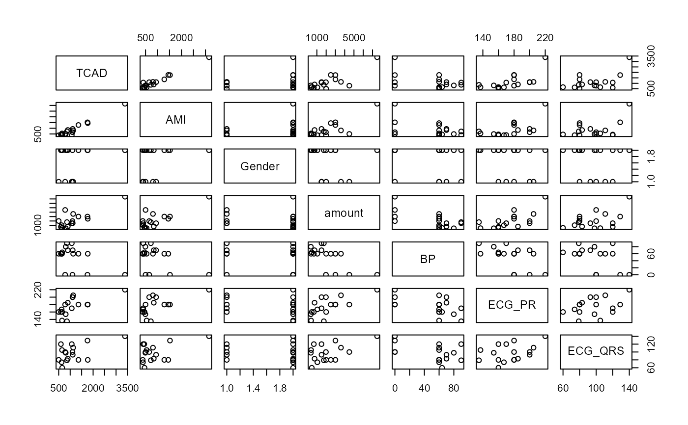
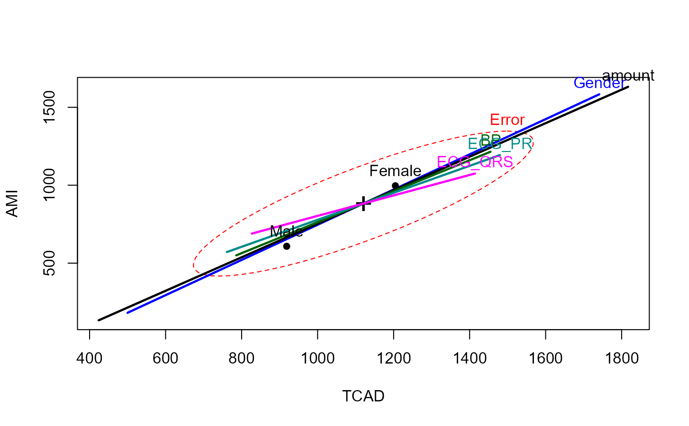

Data on overdoses of the drug amitriptyline.
Amitriptyline is a drug prescribed by physicians as an antidepressant. However, there are also
conjectured side effects that seem to be related to the use of the drug: irregular heart beat,
abnormal blood pressure and irregular waves on the electrocardiogram (ECG).
This dataset (originally from Rudorfer, 1982) gives data on 17 patients admitted to hospital after an overdose
of amitriptyline.
The two response variables are: TCAD and AMI. The other variables are predictors.
Usage
data("Overdose")Format
A data frame with 17 observations on the following 7 variables.
TCADtotal TCAD plasma level, a numeric vector
AMIamount of amitriptyline present in the TCAD plasma level, a numeric vector
Gendera factor with levels
MaleFemaleamountamount of drug taken at time of overdose, a numeric vector
BPdiastolic blood pressure, a numeric vector
ECG_PRECG PR wave measurement, a numeric vector
ECG_QRSECG QRS wave measurement, a numeric vector
References
Rudorfer, M. V. Cardiovascular changes and plasma drug levels after amitriptyline overdose. (1982). J. Toxicology - Clinical Toxicology. 19(1),67-78. doi:10.3109/15563658208990367 , PMID: 7154142.
Clay Ford, "Getting started with Multivariate Multiple Regression", https://library.virginia.edu/data/articles/getting-started-with-multivariate-multiple-regression.
ECG measurements:
Examples
data(Overdose)
str(Overdose)
#> 'data.frame': 17 obs. of 7 variables:
#> $ TCAD : int 3389 1101 1131 596 896 1767 807 1111 645 628 ...
#> $ AMI : int 3149 653 810 448 844 1450 493 941 547 392 ...
#> $ Gender : Factor w/ 2 levels "Male","Female": 2 2 1 2 2 2 2 1 2 2 ...
#> $ amount : int 7500 1975 3600 675 750 2500 350 1500 375 1050 ...
#> $ BP : int 0 0 60 60 70 60 80 70 60 60 ...
#> $ ECG_PR : int 220 200 205 160 185 180 154 200 137 167 ...
#> $ ECG_QRS: int 140 100 111 120 83 80 98 93 105 74 ...
pairs(Overdose)

over.mlm <- lm(cbind(TCAD, AMI) ~ Gender + amount + BP + ECG_PR + ECG_QRS, data = Overdose)
coef(over.mlm)
#> TCAD AMI
#> (Intercept) -2879.4782461 -2728.7085444
#> GenderFemale 675.6507805 763.0297617
#> amount 0.2848511 0.3063734
#> BP 7.2511714 7.2055597
#> ECG_PR 10.2721328 8.8961977
#> ECG_QRS 7.5982397 4.9870508
# check for outliers
cqplot(over.mlm)
# HE plot shows that relations of responses to predictors are essentially one-dimensional
heplot(over.mlm)

# canonical correlation analysis
if(require(candisc)) {
cancor(cbind(TCAD, AMI) ~ as.numeric(Gender) + amount + BP + ECG_PR + ECG_QRS, data = Overdose)
}
#> Warning: non-list contrasts argument ignored
#>
#> Canonical correlation analysis of:
#> 5 X variables: as.numeric(Gender), amount, BP, ECG_PR, ECG_QRS
#> with 2 Y variables: TCAD, AMI
#>
#> CanR CanRSQ Eigen percent cum scree
#> 1 0.9437 0.8905 8.131 96.35 96.35 ******************************
#> 2 0.4853 0.2355 0.308 3.65 100.00 *
#>
#> Test of H0: The canonical correlations in the
#> current row and all that follow are zero
#>
#> CanR LR test stat approx F numDF denDF Pr(> F)
#> 1 0.94366 0.08372 4.9120 10 20 0.001223 **
#> 2 0.48528 0.76451 0.8471 4 11 0.524104
#> ---
#> Signif. codes: 0 '***' 0.001 '**' 0.01 '*' 0.05 '.' 0.1 ' ' 1